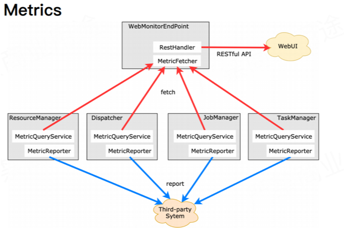

Flink状态监控介绍
本文整理自小组实习生的一篇组内分享
监控机制的必要性：
对于需要 7 * 24 小时不间断运行的流式计算程序来说，能实时监控程序运行状况、出现异常告警能立即响应并快速定位问题是必须具备的能力。
所以在对监控的设计上Flink也是下了一定功夫的，在其官网也是有非常多的介绍。
Flink Metric内置的监控涵盖面丰富，支持：
1 系统级别的监控：CPU状态信息、内存状态信息等（默认关闭，需要更改配置文件打开，且lib目录下需要添加相关依赖jar包）
2 JVM级别的监控：CPU占用率、堆内存使用情况、线程数量、GC已经类加载数量。
3 Flink job/Task/Operator级别的监控：checkPoint相关（耗时、大小、数量）、算子吞吐量、水位线。内置Connector监控，若使用FlinkKafkaConsumer，可以监控job消费kafka速度、offset的LAG值。这一级别的监控也支持自定义。
监控方式

上图是Flink的支持的2中监控数据收集方式：Fetch和Report。
Fetch方式：
WebMonitorEndPoint终端会定期从Flink其余组件处fetch来监控指标信息，并且该终端会提供一个RestHandler向外部开放一个监控指标查询接口。像Flink Web UI就是通过该终端提供的RESTful接口获取相应指标监控信息。
Flink 中，客户端向 Flink 集群发起 REST 请求均是通过 WebMonitorEndpoint 来处理的。顾名思义，WebMonitorEndpoint 接听来自 web 的所有请求并作出对应的响应。
https://ci.apache.org/projects/flink/flink-docs-release-1.8/monitoring/rest_api.html
比如：
/jobmanager/metrics
/jobs/metrics
/jobs/:jobid/metrics
/jobs/:jobid/vertices/:vertexid/metrics
/taskmanagers/metrics
/taskmanagers/:taskmanagerid/metrics
以上这些方法都是flink开放的webapi，我们可以通过这些api去主动抓取监控信息。
Report方式：
同时Flink也提供了往外Report监控指标的方式，及常见的通过在flink-conf.yaml配置Metric Reporter将flink的监控指标定期发送至第三方系统。
这里大家可以想一下Prometheus的工作原理即可，Flink也实现了Prometheus的Report，可以直接通过配置就可以启用，再通过Prometheus去采集集群监控数据。
Flink中的自定义监控指标
Counter
进行计数类型的统计，支持类型仅支持int和long型。使用Counter接口中的inc（）/ inc（long n）或dec（）/ dec（long n）可以输入或减少当前值
Gauge
可以实现Counter的功能，并且支持监控任何类型的数据。
Meter
计算平均吞吐量，使用markEvent（）表示监控事件发生，markEvent（long n）方法表示多个事件同时发生,核心方法getRate()负责计算每秒的吞吐量
Histogram
用于计算Long类型监控指标的分布情况，并以直方图的形式展示。
getStatistic()方法返回的HistogramStatistics可以计算监控值的分位数，平均值，标准偏差，最小值和最大值
Metric Group
Metric在Flink中的实现是以Group来组织的，支持了多层的结构，在Flink中Metric Group和Metric Name的组合作为Metrics的唯一标示。比如在Flink中常见的分组有jobmanager，job，taskmanagers等 比如上面讲到的：
/jobmanager/metrics
/jobs/metrics
/jobs/:jobid/metrics
/jobs/:jobid/vertices/:vertexid/metrics
/taskmanagers/metrics
/taskmanagers/:taskmanagerid/metrics
System Metric
Flink的Metrics提供了内置的一些Metrics，并且提供了扩展接口，大家可以通过扩展接口来扩展自定义的Metrics。这里介绍一下内置的一些Metrics。系统Metric就是内置Metric的一种。 一般用到的metrics有这些：
- cpu
- Memory
- Threads
- Garbage Collection
- Network
- Classloader
- Cluster
- Availability
- CheckPointing
- StateBackend
- IO
更多介绍可以看这里。 https://ci.apache.org/projects/flink/flink-docs-release-1.8/monitoring/metrics.html#system-metrics
用户自定义的Metrics
Flink除了上面介绍的Metrics外，还提供了接口可以自定义开发Metrics。实现上只要继承RichFunction类即可，在定义之后，我们可以使用注册Metrics了。 一般首先是注册Group，然后在Group下面在注册Metrics，具体方法可以参考下面
// 注册Group
getRuntimeContext().getMetricGroup().addGroup()
// 注册自定义的Metrics
getRuntimeContext().getMetricGroup().addGroup("MyMetrics").counter("myCounter");
// 这里注册到MyMetrics组下面的一个counter项：myCounter，
这里metrics注册可以是counter，gauge，histogram，meter。方法和上面类似即可。
具体可以参考https://ci.apache.org/projects/flink/flink-docs-stable/monitoring/metrics.html
监控和使用
收集监控数据，
这里无论是采取API主动抓取Metrics信息，还是通过Reporter收集Metrics信息。要想做监控就首先要收集Metrics。在实际使用建议使用Prometheus来收集Metrics，Prometheus可以较好的和infexdb和Gafana结合，完成数据收集和报表展示，而且还可以扩展Prometheus的告警模块进行下一步的告警。
定制监控规则
这一步就可以对关键指标进行规则配置，比如：每分钟错误码数量大于多少需要告警，告警收敛策略是什么等等
告警通知
在内部我们使用企业微信，钉钉，短信，邮件等方式进行告警，不同的公司估计有不同的告警方式。
报表使用
这里就不用多说了，使用Prometheus的话，结合Grafana可以做到一站式的报表开发。如果没有的话，那自己采集到数据库中就需要自己再结合报表系统进行报表开发了，比如supperset等。
关注「黑光技术」，关注大数据+微服务